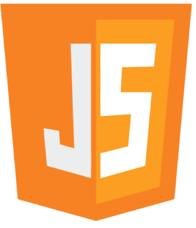
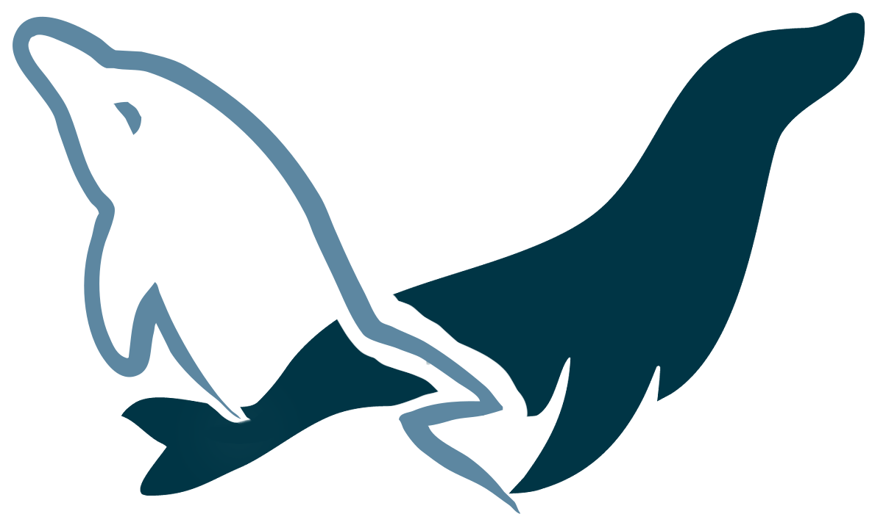

ABOUT ME

안녕하세요.
Java 웹 개발자로서 첫 걸음을 딛으려고 하는 이민지 입니다.
다른 직업들을 경험해보며 조금 늦게 개발 분야로의 전환을 결정했습니다.
그동안의 다양한 경험을 바탕으로, 개발이란 분야는 제가 정말로 좋아하며,
저의 잠재력을 발휘할 수 있는 분야라는 확신을 가지고 있습니다.
이 확신을 기반삼아 더 큰 열정과 의지로 도전하려 합니다. 🎉
- 거주지 경기도 수원시
- 연락처 010 - 5694 - 1944
- 메일 leeminji1944@gamil.com
공부한 내용, 연습하며 배운것들, 경험했던 오류들을 저장한 공간입니다.

연습한 코드, 완성한 코드를 저장한 공간입니다.

제 자신 뿐만 아니라 다른 사람들에게도 도움이 될 수 있는 글을 업로드 하고 있습니다.
23.03.24 ~ 23.08.24
국비지원 Java 웹개발자 과정 수료
Html, CSS, jquery 문법, Bootstrap 사용방법
Java 문법, JSP·Servlet기초, SpringBoot기초
Oracle 기본문법
Java 문법, JSP·Servlet기초, SpringBoot기초
Oracle 기본문법
현재
구직중!
그동안 배운것들을 정리하고, 새로운것을 배우며 구직활동을 하고 있습니다.
최근엔 리액트 기초와 AWS에 대해 공부하고 있습니다 :)
최근엔 리액트 기초와 AWS에 대해 공부하고 있습니다 :)
SKILLS
Front-end
HTML·CSS

JavaScript
jquery
Bootstrap
Back-end

Java
JSP·Servlet
SpringBoot
Database
Oracle

MySQL·MariaDB
Tools
eclipse·STS
IntelliJ
VSCode
git·GitHub
PROJECTS
[ 개인 | 23.09.16 ~ 23.09.20 ]
📑웹 포트폴리오
저의 장점과 기술스택을 보다 명확하게 전달하기 위해 웹으로 포트폴리오를 제작하였습니다.
이를 통해 제가 어떤부분을 잘 하고, 어떤 부분이 부족한지 명확하게 파악할 수 있어 이를 바탕으로 앞으로의 계획을 더욱 확실하게 세울 수 있게 되었습니다.
GitHub | Readme.md (새창에서 열기)
이를 통해 제가 어떤부분을 잘 하고, 어떤 부분이 부족한지 명확하게 파악할 수 있어 이를 바탕으로 앞으로의 계획을 더욱 확실하게 세울 수 있게 되었습니다.
| 링 크 | https://github.com/kimseaweed/LEEMINJI-Portfolio | |
|---|---|---|
| 사용기술 | HTML, CSS, JavaScript, jquery, Bootstrap |
.png)
[ 1인 | 23.08 ]
📑정산기 실기 연습 (총 10개)
정보처리 산업기사 과정평가형 실기 연습입니다.
인터넷이 연결되지 않은 pc에서 자바,오라클,톰캣을 이용하여
4시간 안에 주어진 과제에 맞게 웹 프로그램을 구현하는 방식입니다.
얼마나 잘 하느냐도 중요하지만, 주어진 기간 내에 완료하는것도 중요하기 때문에 시간분배의 중요성을 배울 수 있는 기회였다고 생각합니다.
GitHub | Readme.md (새창에서 열기)
인터넷이 연결되지 않은 pc에서 자바,오라클,톰캣을 이용하여
4시간 안에 주어진 과제에 맞게 웹 프로그램을 구현하는 방식입니다.
얼마나 잘 하느냐도 중요하지만, 주어진 기간 내에 완료하는것도 중요하기 때문에 시간분배의 중요성을 배울 수 있는 기회였다고 생각합니다.
| 사용기술 | HTML·CSS, JavaScript, JSP |
|---|
[ 5인 | 23.08 ]
📑감상토론회 커뮤니티 [감토]
독서를 더 풍부하게 즐길 수 있도록 서로의 감상문을 공유하고 책에 대한 이야기를 나눌 수 있는 커뮤니티 웹서비스입니다.
SpringBoot를 처음으로 사용해보며 전체적인 웹서비스 개발 과정의 기초를 익힐 수 있었습니다.
또한, 혼자서만 사용해봤던 GitHub를 팀원들에게 알려주고 Branch를 나누거나 PR과 Merge를 활용하는 등 GitHub를 통한 협업을 경험해볼 수 있었습니다.
GitHub | Readme.md (새창에서 열기)
SpringBoot를 처음으로 사용해보며 전체적인 웹서비스 개발 과정의 기초를 익힐 수 있었습니다.
또한, 혼자서만 사용해봤던 GitHub를 팀원들에게 알려주고 Branch를 나누거나 PR과 Merge를 활용하는 등 GitHub를 통한 협업을 경험해볼 수 있었습니다.
| 링크 | ||
|---|---|---|
| 사용기술 | HTML, CSS, JavaScript, jquery, Bootstrap |
[ 개인 | 23.5 ]
📑Slack 클론 웹
"Slack"이라는 업무 협업 툴의 홈페이지를 클론하여 프로젝트를 진행했습니다.
HTML, CSS의 기초를 탄탄히 다져가는 동시에,
JavaScript, jquery, Bootstrap을 처음으로 경험해봤습니다.
이 프로젝트를 통해 프론트엔드의 기본적인 지식을 축적할 수 있었습니다.
GitHub | Readme.md (새창에서 열기)
HTML, CSS의 기초를 탄탄히 다져가는 동시에,
JavaScript, jquery, Bootstrap을 처음으로 경험해봤습니다.
이 프로젝트를 통해 프론트엔드의 기본적인 지식을 축적할 수 있었습니다.
| 링 크 | https://kimseaweed.github.io/slack-copy/index.html | |
|---|---|---|
| 사용기술 | HTML, CSS, JavaScript, jquery, Bootstrap |